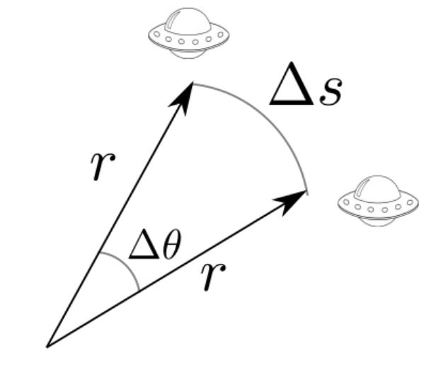

Forrige side🙂 🙁Forberede 2-legemeproblem: vr og vθFORUM
Har du nå klart for deg hva radiell og tangensiell hastighet er for noe?
La oss se om vi kan utlede uttrykket for tangensiell hastighet, altså vθ = rθ̇, en gang til, men nå med litt geometri og rent fysiske argumenter isteden. Vi skal bruke denne figuren her 
som viser en liten forflytning Δs av romskipet i retning av enhetsvektoren e⃗θ. Det er altså en forflytning ortogonalt på posisjonsvektoren som skjer i løpet av et kort tidsrom Δt. Hvordan kan du bruke disse to størrelsene til å definere vθ, og hvordan kan du skrive Δs uttrykt med r og Δθ?Neste side